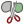
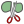

11.2.3 Advanced digitizing
In the previous sections you learned to draw geometries. You also saw how to edit them afterwards by dragging, deleting or adding vertices. These are important basics, but there are many situations that you cannot handle (easily) with these tools alone: adding an inner courtyard to a building, adding a new wing to an existing building, dividing an existing parcel into two smaller ones… The Advanced Digitizing Toolbar (not to be confused with the Advanced Digitizing panel) has tools for exactly these tasks. If this toolbar is not yet visible in your interface, you can find it under . This page covers some of the tools you will use most often.

Moving, rotating and scaling
These three tools work similarly: left-click the feature, move the mouse and left-click again to confirm.
| Tool | What it changes | How you move the mouse |
|---|---|---|
| Move Feature(s) | Position | To the new position |
| Rotate Feature(s) | Orientation | Around the feature, in the direction you want to rotate it |
| Scale Feature(s) | Size | Away from the centre to enlarge it, towards the centre to make it smaller |
In practice, you will often use these tools after copying and pasting a feature, for example to draw several identical buildings. You draw one, paste copies of it and move or rotate each copy into place.
Reshape features
Reshape Features changes the outline of an existing polygon with the line you draw across it. You draw it just like any other line. In this case, if you start inside the polygon, go out of it and come back in, the area enclosed by the line is added to the polygon. If you start outside, cross the polygon and come out on the other side, the part cut off by your line is removed. Right-click to finish the line.


Left: the part at the bottom left is missing. The line starts inside the building, goes out around that part and comes back in, so the part is added. Right: the notch at the bottom right is filled in. The line crosses that corner, so it is cut off again.
By default, all features in your layer that are crossed by the line are reshaped. If specific features are selected, however, only these are reshaped, even if the line crosses others as well.
Before you start reshaping, make sure no features are left selected in your layer by accident. Otherwise, QGIS can only reshape those selected, and your line has no effect on the others.
This tool is very handy for making more substantial changes to existing geometries: redrawing an inaccurate part of a large geometry, or adding a bulge or an indentation. In principle, you could also do this with the Vertex Tool, but then you would have to create a new vertex in the middle of a segment each time and drag it into place.
Rings
So far, all the polygons you have drawn have been completely filled. In practice, you sometimes need openings in them, called rings. Above, we already mentioned inner courtyards, but think also of enclaves, or a lake with islands.
With Add Ring, you draw such an opening inside an existing polygon. You draw this opening just like the polygon itself, only in this case the area you draw is cut out of the polygon. To delete a ring, just select Delete Ring and click inside it.

In chapter 12 you will also see the Delete holes processing tool, which can remove all holes in a layer at once.
Splitting
With

Split Features, you can divide a line or polygon into separate features: draw a line across it, and QGIS splits it wherever the line crosses the geometry. Each resulting part becomes a feature of its own, with the same attributes as the original. Afterwards, you can of course adapt the attributes of each part in the attribute table.Splitting features is useful when you already have a geometry that should be divided, for example a parcel that was later distributed among several heirs. In certain contexts, it also speeds up vectorising. Think of a row of houses: instead of drawing all the adjoining houses one by one, you first draw the whole row and then split it. An extra advantage is that the shared front and back walls then form one perfectly straight line.

To split many polygons at once along the lines of another layer, use the Split with lines tool in the Processing Toolbox (Vector overlay).
Merging
Merge Selected Features does the opposite of the tool above: it combines multiple features into a single ‘large’ one. To use it, first select all the relevant features in the layer, and then click the button.
Merging features affects both the geometry and the attributes:
- QGIS fuses the geometries into one. For adjoining polygons, for example, it creates a new shape based on the outer boundaries of the originals. Former in-between boundaries disappear.
- The attributes cannot be combined in that way. After you click Merge Selected Features, the Merge Features window pops up. Here you can choose which of the originals’ attributes are kept. Several options are provided. To keep those of a specific feature, select its row in the list and click Take attributes from selected feature.
This tool has many practical applications too. For example, data providers often supply their river or road data in pieces, such as river parts rather than one large feature per river. In certain cases you want to turn those into one feature per river. Likewise, think of the fusion of several municipalities.


Left: the abbey and the church are selected. Middle: in the Merge Features window, the abbey’s row is selected. Right: the merged feature, without the dividing line.
In chapter 12 you will also see the Dissolve processing tool, which merges features of a whole layer at once, for example all features with the same value in a field.
Multipart features
You already came across multipart features in chapter 9. A multipart feature is a single feature that consists of several separate geometries, called parts. It has only one row in the attribute table.
| Tool | What it does | How |
|---|---|---|
| Add Part | Adds a new part to an existing feature. | Select the feature, click Add Part and draw the new part as a normal polygon. |
 Split Parts |
Splits a part into several adjoining parts that remain one feature. | Draw a line through the part, as with Split Features. |
| Delete Part | Removes one part of a feature. | Click the part you want to remove. |
In practice, multipart features are used for exclaves or for countries with islands, among other things. Another use case is a layer of large landowners, in which each feature represents a patchwork of parcels.

To turn the parts of multipart features into separate features again, use the Multipart to singleparts processing tool, which you will see in chapter 12. It creates a new layer in which every part is a feature of its own, with the attributes of the original feature.
You can now do Exercise 5.